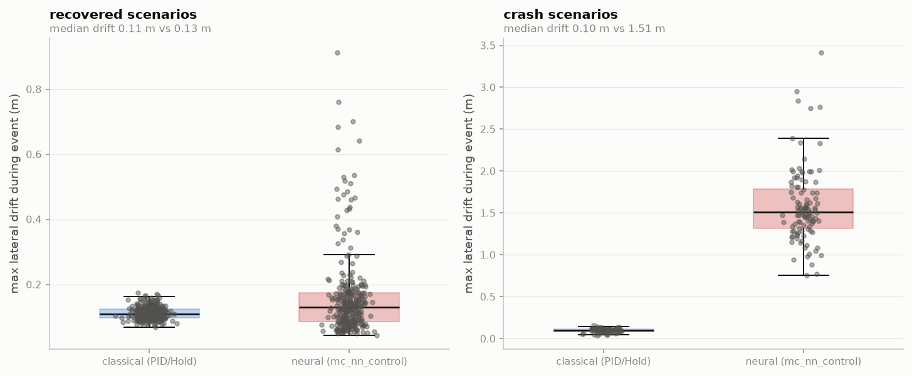

Adversarial evidence for learned flight control
A failure characterization of PX4’s mainline neural controller, and a search method that maps safety boundaries ~3× faster than brute force. Produced in one continuous build on a laptop and free cloud CPU; every number regenerates from archived scenario files and flight logs.
00Summary
Neural networks are arriving in certifiable flight control faster than the methods to
verify them. PX4 merged a TensorFlow-Lite neural position controller
(mc_nn_control) into mainline; the FAA has flight-tested a camera-based neural
landing system with Daedalean explicitly to inform future ML certification policy; EASA’s
MLEAP and CoDANN work is building the learning-assurance framework. What does not exist is a
practical way to generate the evidence those frameworks will demand.
We built one and pointed it at the neural controller that ships in PX4 today. Two results:
1. Pass/fail testing cannot distinguish a neural controller from a classical one that fails far more safely. Across 800 adversarial flights the two controllers show similar failure rates (27.0% vs 24.5%) and an identical crash boundary — but when the neural controller fails it loses lateral position control in 94% of cases (102/108), where the classical stack does so in 0% (0/92).
2. Guided adversarial search maps the safety boundary ~3× more sample-efficiently than uniform sampling, verified across three independent surrogate models and audited against metric artifacts.
01Why this matters now
Certification of learned components is an open problem with a closing deadline. The regulatory scaffolding is arriving (EASA MLEAP final report; CoDANN I/II; SAE G-34 / EUROCAE WG-114 with ED-324), and so are the aircraft: FAA Part 108 BVLOS rulemaking, eVTOL type certification campaigns, and Collaborative Combat Aircraft production contracts that assume autonomy no one has a validated method to test.
The precedent exists in adjacent domains. Berkeley’s VerifAI falsified Boeing’s TaxiNet neural runway tracker in simulation and found that the aircraft’s own shadow, at specific sun angles and weather, drove it off the runway — a failure no engineer would have enumerated, found by search, then closed by retraining. Automotive followed the same path, and the durable value proved to be the scenario description, the coverage metrics, and the evidence layer — not the simulator. Aviation has no equivalent tooling. That is the opportunity.
02What we tested
System under test. PX4-Autopilot mainline at commit
544bccbc, board configuration px4_sitl_neural: a TensorFlow-Lite
Micro network taking 15 state inputs to 4 motor commands. The network is the
position controller, not a monitor bolted onto PID. Simulated airframe: SIH quadrotor,
5 m position hold.
Control arm. The identical airframe and scenario flown under PX4’s classical stack. Every claim below is a paired comparison on the same scenario — the only way to separate “learned control behaves differently” from “this scenario is hard.”
Adversarial event. Each flight establishes a stable hold, then the plant changes underneath the trimmed controller: a mass step (0.5–2.5×) and a thrust-ceiling step (0.5–1.2×) at t+10 s, over static inertia (0.5–3.0×) and drag perturbations. 400 scenarios by Latin-hypercube sampling, both arms, 800 flights, 100% scored.
Oracle. Continuous safety margin, normalized so 0 is the limit: lateral
drift from the hold point (limit 3 m) and altitude error against the setpoint (limit
2.5 m), min() of the two, crashes clamped to −1. Continuous rather
than boolean, because the margin is what a search method optimizes and what an evidence
package must show.
03Result 1 — identical verdicts, categorically different failures
| metric | classical (PID) | neural (mc_nn_control) |
|---|---|---|
| Failure rate | 24.5% | 27.0% |
| Crashes | 92 | 108 |
| 50% failure threshold (mass step) | 2.0–2.25× | 2.0–2.25× |
| Failure rate, pre-boundary band (1.75–2.0×) | 4% | 22% |
| Crashes with >1 m lateral drift | 0 (0%) | 102 (94%) |
| Max lateral drift | 0.16 m | 3.42 m |
| Drift in recovered scenarios (median) | 0.11 m | 0.13 m |
| Scenarios failed by this arm alone | 0 | 10 |
The failure mode is qualitatively different, not quantitatively worse. The classical stack, when overwhelmed, descends while holding lateral position — a degraded but controlled failure. The neural controller loses position control as well, drifting up to 3.4 m. Zero versus 94% is not a statistical trend requiring careful interpretation; it is a categorical behavioral difference.
It is a cliff, not a gradient. In scenarios both controllers survive they are indistinguishable (0.13 vs 0.11 m median drift). The network is fine until it isn’t — the characteristic hazard of learned components, and precisely what nominal-envelope testing cannot surface.
The disagreement is asymmetric. Ten scenarios fail under the neural controller that the classical stack survives; zero the reverse.

04Result 2 — guided search maps the boundary ~3× faster
Failure discovery in an 8-dimensional scenario space is a sampling problem, and brute force is a serious baseline: at a 46.5% base failure rate, random sampling finds failures easily. The scarce quantity is the boundary — the thin band where the system transitions from safe to unsafe — which is what a certification argument must characterize.
We fitted proxy oracles to a 2,000-run fixed-wing baseline (independent airframe and autopilot; holdout R² 0.59–0.73), injected the measured ±0.07 simulator nondeterminism as query noise, and scored strategies on distinct failure and boundary cells discovered within a 200-query budget against Latin-hypercube sampling at the same budget and seeds.
| vs uniform sampling | |
|---|---|
| Composite coverage ratio | 1.77× |
| Boundary-band points found | 3.56× / 3.55× / 4.67× (GBM / RF / MLP proxy) |
| Failure points found | 1.06–1.51× |
The method: an ARD Gaussian-process surrogate with marginal-likelihood lengthscales (scenario sensitivity varies ~20× across dimensions), driven by an expected-coverage-improvement acquisition over the cell partition rather than margin minimization, with observations Winsorized so the surrogate spends its capacity on the level set instead of modeling crash plateaus that earn no additional coverage. Developed across ~40 logged trials by an autonomous research loop; the single largest gain came from optimizing the acquisition surface properly rather than taking argmax over a candidate pool — engineering, not exotica. An instructive negative: a random-forest surrogate is the better offline regressor and clearly worse in the loop — its piecewise-constant posterior gives the acquisition optimizer nothing to climb. Better offline accuracy does not imply better sequential search.
Audit. Two ways this claim could be soft, both checked: collapsing a physically inert coordinate changes the ratio by 0.9% (the discoveries are distinct scenarios, not bookkeeping), and the advantage holds across all three surrogate families. A naive surrogate-guided baseline scored 1.006 — statistically identical to brute force — so the gain comes from the method, not from “using a model.”
05What we also found about the tooling
- PX4’s
failure motor offinjection is inert under the SIH backend. The command is accepted and logged by the failure module; the simulator does not implement it. A test campaign built on that lever would report coverage it does not have. - Live parameter writes do reach the SIH plant — a mass step from 1× to 3× mid-hover drops the aircraft 5 m to ground contact — so mid-flight plant perturbation is a valid injection mechanism where motor failure is not.
- Telemetry-side failure modes read exactly like flight failures. PX4 streams position only to an endpoint it has heard from, and drops a ground station that stops heartbeating; either produces zero samples, which naive harness code scores as a crashed flight. Our first campaign scored 48 successful hovers as takeoff failures for this reason.
06Caveats
- SIH is a coarse simulator. Simple internal hover dynamics, no wind field. Results establish behavioral difference under plant perturbation, not flight-representative failure rates.
- Airframe mismatch.
mc_nn_controlships trained for an X500 V2; the SIH quad is a different vehicle, so degradation is expected. The classical arm on the identical airframe is the control for exactly this — the comparison is valid even though the absolute rates are not transferable. - Scope: hover and position hold. No trajectory tracking, no mission-level behavior, no perception in the loop.
- The search result is measured on proxy oracles, developed offline against a 2,000-run baseline rather than live runs. Live confirmation on the neural controller is the immediate next step.
- The search is strictly sequential — one query at a time. A real farm runs simulations in parallel, and batched acquisition costs efficiency; the farm number will be lower than the sequential one.
- The surrogate, not the search, is the binding constraint. The identical search against a cheating oracle scores 2.63× composite — the gap from 1.77 is entirely model error, and rougher real margin surfaces will widen it.
07Where this goes
Near term: run the guided search live against the neural controller and confirm the ~3× boundary efficiency on the system under test; extend the scenario space to trajectory tracking and wind. Days of work on existing infrastructure.
The product: the scenario schema, continuous oracles, guided search, and evidence package are autopilot-agnostic; nothing in the method assumed PX4 or ArduPilot. The engagement model is to point this at a partner’s stack — on-premises, no data leaves — and deliver the failure map and evidence for a learned component they cannot otherwise certify.
Perception is the next frontier, and it strengthens the case. As autopilots consume cameras and radar, the input space stops being samplable by brute force entirely, and guided search becomes the only viable method. The plant layer for that already exists in the open — world foundation models, Gaussian-splat scene reconstruction — and is not where a small team should compete. The search and evidence layer above it is.